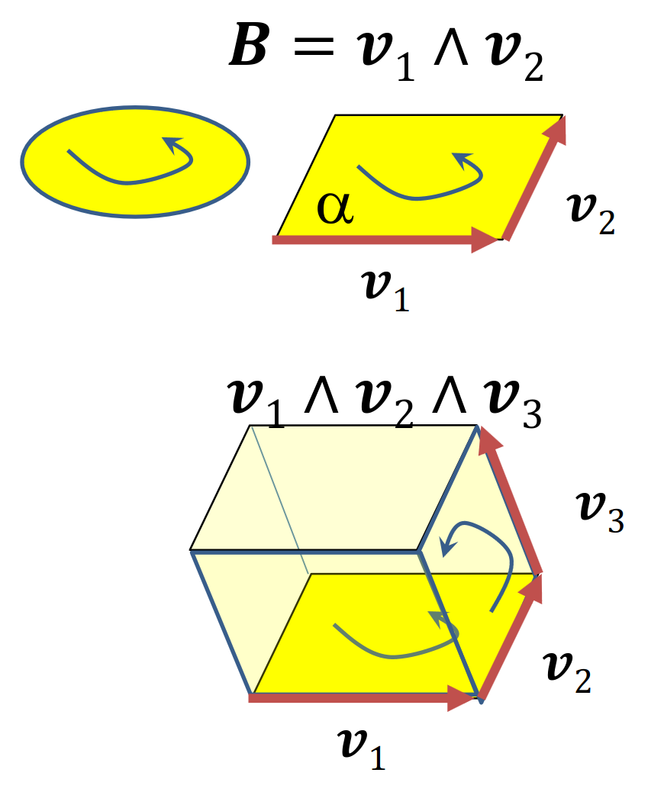
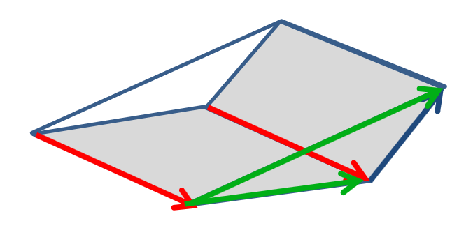
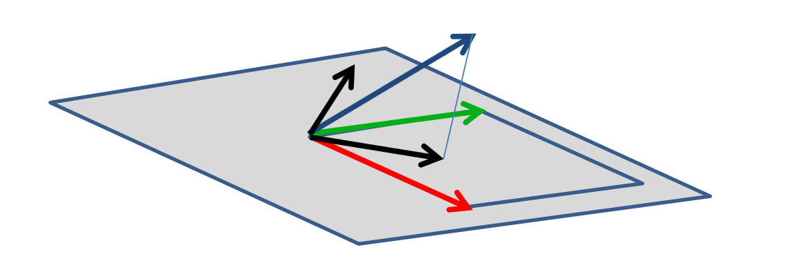
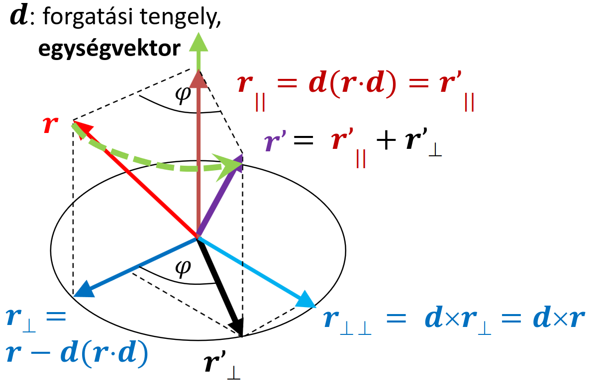
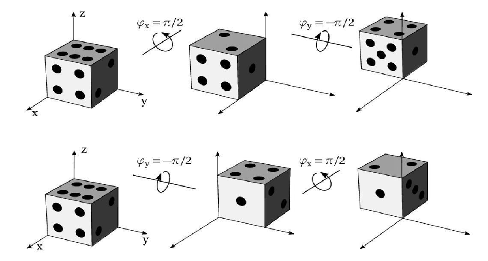

Vektorháború
2D geometria = vektor algebra
- koordinátákkal számolható, de szerkeszthető is (tenzor)
- pont: \(p = [x, y, 1]\)
- vektor: \(v = [x, y, 0]\)
- eltolás: \(p' = p + v\) (Invertálható, van kivonás)
-
eltolás, forgatás, skálázás: \([x', y', 1] = [x, y, 1] \begin{bmatrix} a & e & 0\\ b & f & 0\\ c & d & 0\\ \end{bmatrix}\)
-
nincs rendes szorzás
-
skaláris szorzás (dot product)
- \(v \cdot a = b \stackrel{def}{\implies} |v||a|\cos\alpha = b\)
- az eredmény egy skalár (\(v\)-nek \(a\)-ra vett vetületének hossza)
- nem asszociatív
- kommutatív (szimmetrikus)
- disztibutív
- nem invertálható
-
vektorális szorzás (cross product)
- \(v \times a = b \stackrel{def}{\implies} |v||a|\sin\alpha = |b|\) (és \(b\) merőleges mindkét vektorra + jobbkézszabály)
- csak 3D-ben 2 változós!
- nem asszociatív
- antikommutatív (ellentétes előjel)
- disztributív
- nem invertálható
-
külső szorzat (wedge product)
- \(v_1 \wedge v_2\)
-
ugyan úgy számolod ki, mint a kersztszorzást, de nem ugyan azt jelenti, nem használható ugyan úgy
- def.: \(|v_1 \wedge v_2| = |v_1| |v_2| \sin \alpha\)
- jelentése: irányított terület/térfogat  itt \(B\) egy multivektor (azon belül is egy bivektor?)
- asszociatív
- antikommutatív
- disztributív
-
Multivektor
- \(V = s + v + B\) (térfogat = skalár + vektor + bivektor, de ez csak egy példa, hogy miből állhat egy multivektor)
- műveletek bivektorokkal
- skalárral szorzás: triviális
- összeadás:  komponensenként adjuk össze
- belső szorzás (skaláris):  \(= s_1 \cdot s_2 + v_1 \cdot v_2\)
2D geometria = komplex szám
- pont: \(z_p = x_p + iy_p = Re^{i\alpha} = R \cos\alpha + iR \sin\alpha\)
-
eltolás \(z_t = x_t + iy_p\)-vel:
\(\(\boxed{ {z_p}' = z_p + z_t}\)\) asd - irányfüggetlen skálázás \(z_s = s\)-sel
\(\(\boxed{ {z_p}' = z_p \cdot z_s}\)\) asd - forgatva nyújtás \(z_r = x_r + iy_r = se^{i\varphi}\)-vel
\(\(\boxed{ {z_p}' = z_p \cdot z_r = Rs \cdot e^{i(\varphi + \alpha)}}\)\) asd - forgatás = előző, csak egység abszolút értékű komplex számmal (\(s = 1\))
Geometria 3D-ben
- eltolás (összeadás) és skálázás (skalárral szorzás) tetszőleges dimenzióban általánosítható
- forgatás: lineáris művelet, tehát kell legyen egy \(r' = R(r)\)-hez tartozó mátrix
\(x'i + y'j + z'k = R(x + y + z) = xR(i) + yR(j) + zR(k)\)
$[x', y', z'] = [x, y, z] \begin{bmatrix} R(i)_x & R(i)_y & R(i)_z \newline R(j)_x & R(j)_y & R(j)_z \newline R(k)_x & R(k)_y & R(k)_z \newline \end{bmatrix} $
Rodrigues formula
Origón átmenő \(d\) tengely körüli forgatás. 
Magyarázat:
- \(d\) (zöld): forgatási tengely
- \(r\) (piros): forgatni kívánt vektor
- \(r_\parallel = r'_\parallel = d(r \cdot d)\) (barna): \(d\)-vel párhuzamos komponense \(r\) és \(r'\)-nek (egyenlők)
- \(r_\perp = r - d(r \cdot d)\) (sötétkék): \(r-r_\parallel\), azaz \(r\)-ből kivonjuk a párhuzamos komponenst, ami marad az már biztosan merőleges
-
\(r_{\perp\perp} = d \times r_\perp = d \times r\) (világoskék): \(d\)-re és \(r_{(\perp)}\)-re merőleges
-
\(r' = r'_\parallel + r'_\perp\) (lila): \(r\) elforgatva, a párhuzamos és merőleges komponensek összege
A merőleges komponenst pedig \(r_\perp\), \(r_{\perp\perp}\) és szögfüggvények segítségével az alábbi módon kaphatjuk meg:
-
\(r'_\perp = r_\perp \cos\varphi + r_{\perp\perp} \sin\varphi\)
Komplex számok 3D-ben
- \(z = x + yi + zj\) (tippre ez 2 különböző \(z\))
- összeadásnál és skálázásnál beláttuk, hogy dimenziófüggetlen
- forgatás mint szorzás?
- asszociatív, összeadásra disztributív
- nem kommutatív:  (más sorrendben forgatunk \(\rightarrow\) más eredmény)
- invertálható
Hamilton: kvaternió (4D komplex szám)
- \(q = [s, x, y, z] = [s, d] = s + xi + yj + zk\)
- összeadás: \(q_1 + q_2 = [s_1 + s_2, x_1 + x_2, y_1 + y_2, z_1 + z_2]\)
- skalárral szorzás: \(aq = qa = [as, ax, ay, az]\)
-
abszolút érték \(|q| = \sqrt{s^2 + x^2 + y^2 + z^2}\)
-
szorzás (fr this time):
\(\boxed{[s_1, d_1]\cdot[s_2, d_2] = [s_1s_2 - d_1 \cdot d_2, s_1 \cdot d_2 + s_2 \cdot d_1 + d_1 \times d_2]}\)
\(\boxed{i^2 = j^2 = k^2 = ijk = -1}\)
\(ij = k, ~~ ji = -k\)
\(jk = i, ~~ kj = -i\)
\(ki = j, ~~ ik = -j\)
- asszociatív
- nem kommutatív
- összeadásra disztributív
-
van egységelem: \([1, 0, 0, 0]\)
-
van inverz: \(q^{-1} = [s, -d]/|q|^2, q^{-1} \cdot q = q \cdot q^{-1} = [1, 0, 0, 0]\)
-
forgatás origón átmenő \(d\) tengely körül:
- \(q = [\cos(\alpha/2), d \sin(\alpha/2)]\), \(d\) pedig normalizált azaz \(|d| = 1\)
- \(q \cdot [0, u] \cdot q^{-1} = [0, v]\), \(v\) az \(u\) elforgatottja a \(d\) körül \(\alpha\)-val
- kvaterniót csak kvaternióval tudunk szorozni, tehát a valós részt 0-nak vesszük és mellé rakjuk \(u\)-t
- kétszer is szorzunk, ezért használunk csak \(\alpha/2\)-t
- egy nagyon jó interaktív videó a kvaterniókról, ami segít elképzelni (3b1b)
Implementáció
struct vec4
{
float x, y, z, w; // w = s, ijk = xyz megefeleltetés!
...
};
vec4 qmul(vec4 q1, vec4 q2)
{ // kvaternió szorzás
vec3 d1(q1.x, q1.y, q1.z), d2(q2.x, q2.y, q2.z);
return vec4(d2 * q1.w + d1 * q2.w + cross(d1, d2),
q1.w * q2.w - dot(d1, d2));
}
vec4 quaternion(float ang, vec3 axis)
{ // konstruálás
vec3 d = normalize(axis) * sinf(ang / 2);
return vec4(d.x, d.y, d.z, cosf(ang / 2));
}
vec3 Rotate(vec3 u, vec4 q)
{
vec4 qinv(-q.x, -q.y, -q.z, q.w); // conjugate
vec4 qr = qmul(qmul(q, vec4(u.x, u.y, u.z, 0)), qinv);
return vec3(qr.x, qr.y, qr.z);
}
GPU shaderprogram
uniform vec4 q; // quaternion as uniform variable
in vec3 u; // Varying input: vertex
vec4 qmul(vec4 q1, vec4 q2)
{
vec3 d1 = q1.xyz, d2 = q2.xyz;
return vec4(d2 * q1.w + d1 * q2.w + cross(d1, d2),
q1.w * q2.w - dot(d1, d2));
}
void main()
{ // vertex shader program
vec4 qinv = vec4(-q.xyz, q.w); // conjugate
vec3 v = qmul(qmul(q, vec4(u, 0)), qinv).xyz;
gl_Position = vec4(v, 1);
}
Automatikus deriválás
Hogyan NE
\(f'(x) = \cfrac{f(x + \Delta) - f(x)}{\Delta}\)
Bajok:
- kivonás miatt értékes jegyeket veszítünk
- túl kicsi \(\Delta \rightarrow\) zajos
- túl nagy \(\Delta \rightarrow\) pontatlan
Clifford algebra
azért mi mégis csak szeretnénk c++-ban valahogy deriválni
Hiperszám
\(z = x + iy\), ahol
- \(i^2 = -1\): komplex szám
- \(i^2 = 1\): hiperbolikus szám
- \(i^2 = 0\): duális szám
Duális számok (\(i^2 = 0\))
-
összeadás, kivonás:
\((x_1 + y_1i) \pm (x_2+y_2i) = (x_1 \pm x_2) + (y_1 \pm y_2)i\)
-
szorzás:
\((x_1+y_1i) \cdot (x_2+y_2i) = (x_1x_2) + (x_1y_2+y_1x_2)i +\xcancel{(y_1y_2)i^2}\)
-
hányados:
$ \cfrac{x_1 + y_1i}{x_2 + y_2i} = \cfrac{(x_1 + y_1i)(x_2 - y_2i)}{(x_2 + y_2i)(x_2 - y_2i)}= \cfrac{x_1x_2 + (y_1x_2x_1y_2)i \xcancel{(y_1y_2)i^2}}{x^2_2 - \xcancel{y^2_2i^2}} = \cfrac{x_1}{x_2} + \cfrac{y_1x_2-x_1y_2}{x^2_2}i $
Ezek valós tagja a függvény, az imaginárius rész (\(\cdot i\)) pedig a derviált
Implementáció
Duális szám osztály
struct Dnum
{
float f, d; // function and derivative values
Dnum(float f0, float d0 = 0)
{ // constant’ = 0
f = f0, d = d0;
}
Dnum operator+(Dnum r) { return Dnum(f + r.f, d + r.d); }
Dnum operator-(Dnum r) { return Dnum(f - r.f, d - r.d); }
Dnum operator*(Dnum r) { return Dnum(f * r.f, f * r.d + d * r.f); }
Dnum operator/(Dnum r) { return Dnum(f / r.f, (d * r.f - f * r.d) / r.f / r.f); }
};
Alkalmazása
// diuális számok nélkül, alapból
float t = value;
float F = t * a / (t * t + b);
// deriválással együtt
Dnum F = Dnum(t,1) * Dnum(a,0) / (Dnum(t,1) * Dnum(t,1) + Dnum(b,0));
// szebben
Dnum t(value, 1);
Dnum F = t * a / (t * t + b);
Elemi függvények
struct Dnum
{
float f, d; // function and derivative values
Dnum(float f0, float d0 = 0) { f = f0, d = d0; }
...
};
Dnum Sin(float t) { return Dnum(sinf(t), cosf(t)); }
Dnum Cos(float t) { return Dnum(cosf(t), -sinf(t)); }
...
Összetett függvényekre (pl. egymásba ágyazott)
struct Dnum
{
float f, d; // function and derivative values
Dnum(float f0, float d0 = 0) { f = f0, d = d0; }
...
};
Dnum Sin(Dnum g) { return Dnum(sinf(g.f), cosf(g.f) * g.d); }
Dnum Cos(Dnum g) { return Dnum(cosf(g.f), -sinf(g.f) * g.d); }
Dnum Tan(Dnum g) { return Sin(g)/Cos(g); }
Dnum Log(Dnum g) { return Dnum(logf(g.f), 1/g.f * g.d); }
Dnum Exp(Dnum g) { return Dnum(expf(g.f), expf(g.f) * g.d); }
Dnum Pow(Dnum g, float n) { return Dnum(powf(g.f, n), n * powf(g.f, n - 1) * g.d); }
Többváltozós függvényeknél
template <class T>
struct Dnum
{
float f; // function value
T d; // derivatives
Dnum(float f0, T d0 = T(0)) { f = f0, d = d0; }
Dnum operator+(Dnum r) { return Dnum(f + r.f, d + r.d); }
Dnum operator*(Dnum r) { return Dnum(f * r.f, f * r.d + d * r.f); }
Dnum operator/(Dnum r) { return Dnum(f / r.f, (d * r.f - f * r.d) / r.f / r.f); }
};
template <class T>
Dnum<T> Exp(Dnum<T> g)
{
return Dnum<T>(expf(g.f), expf(g.f) * g.d);
}
float x, y, z;
Dnum<vec3> X(x,vec3(1,0,0)), Y(y,vec3(0,1,0)), Z(z,vec3(0,0,1));
Dnum<vec3> F = X*X/a + Y*Y/b + Z*Z/c – 1;
vec3 grad = F.d;
Példa:
Egy 2 dimenziós pályán haladunk, és azt szeretnénk, hogy mindig a sebesség irányába nézzünk.
Pálya:
\(x(t) = \cfrac{\sin(t)(\sin(t)+3)4}{\tan(\cos(t)+2)}\)
\(y(t) = \cfrac{(\cos(\sin(t))8+1)12+2}{(sin(t)sin(t))^3+2}\)
A sebességvektor, azaz hogy merre nézünk:
\(v(t) = (\.x(t), \.y(t))\)
Ezt biztos hogy le nem deriválom neked. De nem is kell mert majd ő kiszámolja.
void Animate(float tt)
{
Dnum t(tt, 1);
Dnum x = Sin(t)*(Sin(t)+3)*4 / (Tan(Cos(t))+2);
Dnum y = (Cos(Sin(t)*8+1)*12+2)/(Pow(Sin(t)*Sin(t),3)+2);
vec2 position(x.f, y.f), velocity(x.d, y.d);
vec2 heading = normalize(velocity);
Draw(position, heading);
}
Kvíz
Bár elvileg az első vizsgán nem lesz kvaterniószámolás de ez egy nagyon erős elvileg.
1. Mi lesz az alábbi kvaternió szorzás eredményének első képzetes része, azaz az i szorzója?
\(q \cdot u \cdot q^{-1}\)
ha
$q=[\frac{\sqrt{2}}2, 0, 0, \frac{\sqrt{2}}2] $ és \(u=[0, 10, 0, 0]\)
Megoldás:
Emlékezzünk az alábbi képletekre:
\([s_1, d_1]\cdot[s_2, d_2] = [s_1s_2 - d_1 \cdot d_2, s_1 \cdot d_2 + s_2 \cdot d_1 + d_1 \times d_2]\)
\(q^{-1} = [s, -d]/|q|^2\)
Tehát
\(q^{-1} = [\frac{\sqrt{2}}2, 0, 0, - \frac{\sqrt{2}}2]\)
\(q \cdot u = [0, (5\sqrt2, 0, 0) + (0, 0, 0) + (0, 5\sqrt2, 0)] = [0, 5\sqrt2, 5\sqrt2, 0]\)
Még meg kell szorozni \(q^{-1}\)-zel:
\([0, (0,0,0) + (5, 5, 0) (-5, 5, 0)] = [0, 0, 10, 0]\)
Azaz \(i = 0\).
2. Mi lesz az alábbi kvaternió szorzás eredményének második képzetes része, azaz a j szorzója?
\(q \cdot u \cdot q^{-1}\)
ha
$q=[\frac{\sqrt{2}}2, 0, 0, \frac{\sqrt{2}}2] $ és \(u=[0, 6, 0, 0]\)
Megoldás:
Hasonlóképpen. Ellenőrzésképp: \(j = 6\).
3. Adott két kvaternió:
\(q_1=1+2i +2j + 3k\)
\(q_2=1+0i +2j + 2k\)
Mi lesz a \(q_1 \cdot q_2\) első imaginárius része, azaz az i szorzója?
Megoldás:
Átírhatók \([s, d(i , j, k)]\) alakba, onnantól hasonlóképpen számoljuk.
Ellenőrzésképp: \(i = 0\).
4. Adott két kvaternió:
\(q_1=1+5i +3j + 1k\)
\(q_2=4+4i +0j + 2k\)
Mi lesz a \(q_1 \cdot q_2\) valós része?
Megoldás: Hasonlóképpen. Ellenőrzésképp: \(s = -18\).
5. A 3D forgatás művelet mely tulajdonságokkal rendelkezik az alábbiak közül?
- Van egységelem, azaz olyan forgatás, amely nem áltoztatja meg az alakzatot.
- Invertálható
- Az összeadással disztributív
- Asszociatív
- Kommutatív (nem az, szemléltetésnek a fenti dobókockás kép)
:3